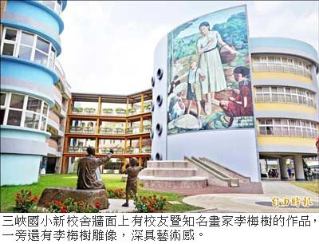

〈台北都會〉
三峽國小老舊校舍改建落成 新設李梅樹園區
張安蕎｜自由時報／新北都會新聞｜2015年9月24日
百年老校三峽國小師生多達一千七百人，雖然今年完成第二期老舊校舍改建工程，仍有教室不足的問題，家長及專科教師都希望能爭取經費，進行第三期校舍改建，讓學生有完整的學習空間。
總經費六億 增四棟教學大樓
三峽國小創建於西元一九○○年，因建築年代久遠，六年前開始改建校舍，花費逾六億元，新增四棟教學大樓，昨天校方舉辦第二期工程落成典禮，新穎的教室、開闊的地景及綠地，學生們自在的在校園內奔跑。
為表彰校友李梅樹的成就，校園內更規畫「李梅樹藝術園區」，新校舍牆面鑲嵌其畫作《玩弄火雞的小孩》，一旁還有李梅樹指導學童繪畫的銅雕，校內師生彷彿沐浴於藝術美學的教學情境中。
不過，由於校內學生眾多，今年共編制五十九個班級，導致專科教室不敷使用，目前只有五間專科教室供中高年級學生輪流使用，音樂老師必須扛著電子琴跑班教學、自然老師則抱著植物花盆在走廊上奔走，族語課的服裝、紡織機只能放在儲藏室，學生若想請教課業，也必須校園跑透透，尋找專科老師到底在哪個班級。
教室仍不足 師生盼再改建
教師們無奈地自我安慰，「至少我們省下了整隊時間。」目前校內仍有一棟老舊校舍耐震係數不符規定，期盼市府能編列經費，進行第三期改建，讓教學空間更完備。
教局：目前傾向補強 不再新增
教育局永續環境教育科長劉美蘭表示，目前傾向編列經費，補強老舊校舍耐震問題，不再新增校舍，因鄰近的北大國小明年即將招生，加上少子化衝擊，預料三峽國小的班級數仍有變動，屆時能再調度教室空間。